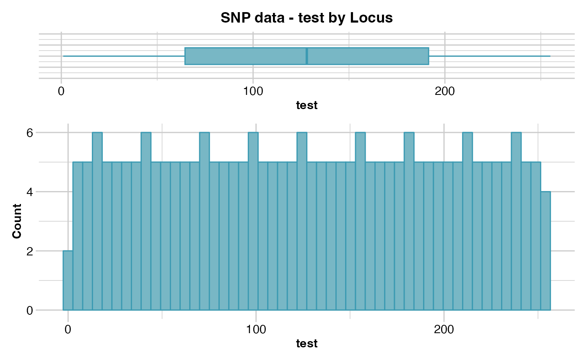
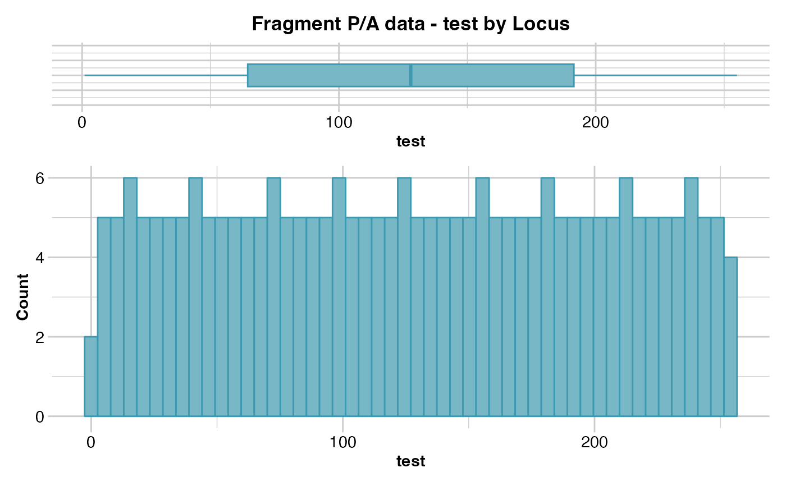

Reports summary of the slot $other$loc.metrics
gl.report.locmetric.RdThis script uses any field with numeric values stored in $other$loc.metrics
to produce summary statistics (mean, minimum, average, quantiles), histograms
and boxplots to assist the decision of choosing thresholds for the filter
function gl.filter.locmetric.
Usage
gl.report.locmetric(
x,
metric,
plot.out = TRUE,
plot_theme = theme_dartR(),
plot_colors = two_colors,
save2tmp = FALSE,
verbose = NULL
)Arguments
- x
Name of the genlight object containing the SNP or presence/absence (SilicoDArT) data [required].
- metric
Name of the metric to be used for filtering [required].
- plot.out
Specify if plot is to be produced [default TRUE].
- plot_theme
Theme for the plot. See Details for options [default theme_dartR()].
- plot_colors
List of two color names for the borders and fill of the plots [default two_colors].
- save2tmp
If TRUE, saves any ggplots and listings to the session temporary directory (tempdir) [default FALSE].
- verbose
Verbosity: 0, silent or fatal errors; 1, begin and end; 2, progress log; 3, progress and results summary; 5, full report [default NULL, unless specified using gl.set.verbosity].
Details
The function gl.filter.locmetric will filter out the
loci with a locmetric value below a specified threshold.
The fields that are included in dartR, and a short description, are found below. Optionally, the user can also set his/her own field by adding a vector into $other$loc.metrics as shown in the example. You can check the names of all available loc.metrics via: names(gl$other$loc.metrics).
SnpPosition - position (zero is position 1) in the sequence tag of the defined SNP variant base.
CallRate - proportion of samples for which the genotype call is non-missing (that is, not '-' ).
OneRatioRef - proportion of samples for which the genotype score is 0.
OneRatioSnp - proportion of samples for which the genotype score is 2.
FreqHomRef - proportion of samples homozygous for the Reference allele.
FreqHomSnp - proportion of samples homozygous for the Alternate (SNP) allele.
FreqHets - proportion of samples which score as heterozygous, that is, scored as 1.
PICRef - polymorphism information content (PIC) for the Reference allele.
PICSnp - polymorphism information content (PIC) for the SNP.
AvgPIC - average of the polymorphism information content (PIC) of the reference and SNP alleles.
AvgCountRef - sum of the tag read counts for all samples, divided by the number of samples with non-zero tag read counts, for the Reference allele row.
AvgCountSnp - sum of the tag read counts for all samples, divided by the number of samples with non-zero tag read counts, for the Alternate (SNP) allele row.
RepAvg - proportion of technical replicate assay pairs for which the marker score is consistent.
rdepth - read depth.
Function's output
The minimum, maximum, mean and a tabulation of quantiles of the locmetric values against thresholds rate are provided. Output also includes a boxplot and a histogram.
Quantiles are partitions of a finite set of values into q subsets of (nearly) equal sizes. In this function q = 20. Quantiles are useful measures because they are less susceptible to long-tailed distributions and outliers.
Plots and table were saved to the temporal directory (tempdir) and can be
accessed with the function gl.print.reports and listed with
the function gl.list.reports. Note that they can be accessed
only in the current R session because tempdir is cleared each time that the
R session is closed.
Examples of other themes that can be used can be consulted in:
See also
gl.filter.locmetric, gl.list.reports,
gl.print.reports
Other filters and filter reports:
gl.filter.allna(),
gl.filter.monomorphs(),
gl.filter.rdepth(),
gl.filter.reproducibility(),
gl.filter.secondaries(),
gl.report.callrate(),
gl.report.hamming(),
gl.report.monomorphs(),
gl.report.rdepth(),
gl.report.reproducibility(),
gl.report.taglength()
Author
Luis Mijangos (Post to https://groups.google.com/d/forum/dartr)
Examples
# adding dummy data
test <- testset.gl
test$other$loc.metrics$test <- 1:nLoc(test)
# SNP data
out <- gl.report.locmetric(test,metric='test')
#> Starting gl.report.locmetric
#> Processing genlight object with SNP data
#> Reporting test by Locus
#> No. of loci = 255
#> No. of individuals = 250
#> Minimum : Min. : 1.0
#> 1st quantile : 1st Qu.: 64.5
#> Median : Median :128.0
#> Mean : Mean :128.0
#> 3r quantile : 3rd Qu.:191.5
#> Maximum : Max. :255.0
#>

#> Quantile Threshold Retained Percent Filtered Percent
#> 1 100% 255 1 0.4 254 99.6
#> 2 95% 243 13 5.1 242 94.9
#> 3 90% 230 26 10.2 229 89.8
#> 4 85% 217 39 15.3 216 84.7
#> 5 80% 204 52 20.4 203 79.6
#> 6 75% 192 64 25.1 191 74.9
#> 7 70% 179 77 30.2 178 69.8
#> 8 65% 166 90 35.3 165 64.7
#> 9 60% 154 102 40.0 153 60.0
#> 10 55% 141 115 45.1 140 54.9
#> 11 50% 128 128 50.2 127 49.8
#> 12 45% 115 141 55.3 114 44.7
#> 13 40% 102 154 60.4 101 39.6
#> 14 35% 90 166 65.1 89 34.9
#> 15 30% 77 179 70.2 76 29.8
#> 16 25% 64 192 75.3 63 24.7
#> 17 20% 51 205 80.4 50 19.6
#> 18 15% 39 217 85.1 38 14.9
#> 19 10% 26 230 90.2 25 9.8
#> 20 5% 13 243 95.3 12 4.7
#> 21 0% 1 255 100.0 0 0.0
#> Completed: gl.report.locmetric
#>
# adding dummy data
test.gs <- testset.gs
test.gs$other$loc.metrics$test <- 1:nLoc(test.gs)
# Tag P/A data
out <- gl.report.locmetric(test.gs,metric='test')
#> Starting gl.report.locmetric
#> Processing genlight object with Presence/Absence (SilicoDArT) data
#> Reporting test by Locus
#> No. of loci = 255
#> No. of individuals = 218
#> Minimum : Min. : 1.0
#> 1st quantile : 1st Qu.: 64.5
#> Median : Median :128.0
#> Mean : Mean :128.0
#> 3r quantile : 3rd Qu.:191.5
#> Maximum : Max. :255.0
#>

#> Quantile Threshold Retained Percent Filtered Percent
#> 1 100% 255 1 0.4 254 99.6
#> 2 95% 243 13 5.1 242 94.9
#> 3 90% 230 26 10.2 229 89.8
#> 4 85% 217 39 15.3 216 84.7
#> 5 80% 204 52 20.4 203 79.6
#> 6 75% 192 64 25.1 191 74.9
#> 7 70% 179 77 30.2 178 69.8
#> 8 65% 166 90 35.3 165 64.7
#> 9 60% 154 102 40.0 153 60.0
#> 10 55% 141 115 45.1 140 54.9
#> 11 50% 128 128 50.2 127 49.8
#> 12 45% 115 141 55.3 114 44.7
#> 13 40% 102 154 60.4 101 39.6
#> 14 35% 90 166 65.1 89 34.9
#> 15 30% 77 179 70.2 76 29.8
#> 16 25% 64 192 75.3 63 24.7
#> 17 20% 51 205 80.4 50 19.6
#> 18 15% 39 217 85.1 38 14.9
#> 19 10% 26 230 90.2 25 9.8
#> 20 5% 13 243 95.3 12 4.7
#> 21 0% 1 255 100.0 0 0.0
#> Completed: gl.report.locmetric
#>